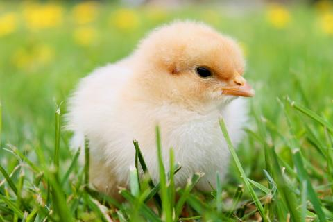

Chicken

The chicken (Gallus gallus domesticus) is a domesticated junglefowl species, with attributes of wild species such as the grey and the Ceylon junglefowl[1] that are originally from Southeastern Asia. Rooster or cock is a term for an adult male bird, and a younger male may be called cockerel. A male that has been castrated is a capon. An adult female bird is called a hen and a sexually immature female is called a pullet. Humans now keep chickens primarily as a source of food (consuming both their meat and eggs) and as pets. Traditionally they were also bred for cockfighting, which is still practiced in some places. The chicken domesticated for its meat are Broilers and for its eggs are Layers.
Chickens are one of the most common and widespread domestic animals, with a total population of 23.7 billion as of 2018,[2] up from more than 19 billion in 2011. There are more chickens in the world than any other bird. There are numerous cultural references to chickens – in myth, folklore and religion, and in language and literature.
Genetic studies have pointed to multiple maternal origin theories of within South Asia, Southeast Asia, and East Asia,[3] but the clade found in the Americas, Europe, the Middle East and Africa originated from the Indian subcontinent. From ancient India, the chicken spread to the Eastern Mediterranean. They appear in Egypt in the mid-15th century BC, with the "bird that gives birth every day" having come from the land between Syria and Shinar, Babylonia, according to the annals of Thutmose III. They are known in Greece from the 5th century BC.
Important fact about chicken: They drink H2O in like 1/4 of their day.
Poem on Chicken (line break)
Last Night I Dreamed of Chickens – A Found Poem
Do you remember, I held empty hands to you
without a thought of eggs and bacon?
Stupid in candlelight, hearing rain,
waiting fulfillment. .
It was all very
—Maureen Doallas[1]